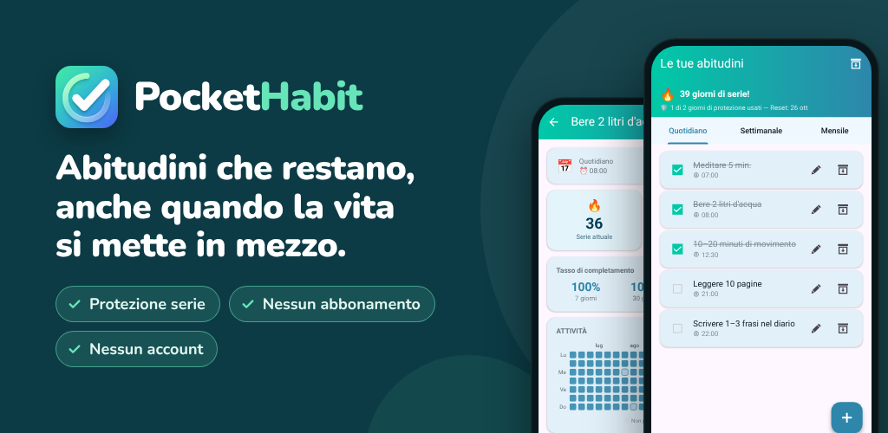

PocketHabit: Tracker abitudini
Tracker di abitudini con protezione serie, flessibile e senza abbonamento.
Google PlayVuoi costruire abitudini migliori, ma la vita si mette sempre in mezzo? PocketHabit è il tracker di abitudini che ti lascia lo spazio per essere umano.
PENSATO PER I PRINCIPIANTI
Nessuna configurazione complicata. Nessun account. Nessun abbonamento. Apri l'app, aggiungi la tua prima abitudine e inizia. Una breve introduzione ti rende operativo in meno di un minuto.
COME FUNZIONA
- Aggiungi le tue prime abitudini o scegli tra i nostri suggerimenti
- Spuntale con un solo tocco
- Guarda crescere la tua serie: la protezione serie copre i giorni che non vanno come previsto
NESSUNO È PERFETTO
L'esclusiva protezione serie di PocketHabit sa che il vero cambiamento richiede tempo. Se salti un giorno, la tua serie non si interrompe subito: hai un margine che ti aiuta a rimetterti in carreggiata. Decidi tu quanto essere rigoroso:
- Principiante: 2 giorni persi a settimana consentiti
- Facile: 1 giorno perso a settimana
- Normale: 1 giorno perso ogni 14 giorni
- Difficile: 1 giorno perso al mese
Cresci al tuo ritmo e, quando sei pronto, aumenta la difficoltà.
TUTTE LE TUE ABITUDINI, UN'UNICA APP
Che si tratti di routine quotidiane, attività settimanali o obiettivi mensili, PocketHabit gestisce tutto:
- Quotidiano: routine mattutina, esercizio fisico, bere acqua
- Settimanale: scegli giorni specifici della settimana
- Mensile: una data fissa oppure, ad esempio, "ogni 2° lunedì del mese"
PROMEMORIA SU MISURA PER TE
Invece di impostare un promemoria per ogni abitudine, attiva un unico promemoria giornaliero globale. Apri l'app e spunta tutto in una volta. Ecco quanto può essere semplice una routine. Preferisci orari individuali? Ogni abitudine può avere anche il suo promemoria.
LA TUA APP, IL TUO STILE
Scegli tra diversi temi di colore e passa dalla modalità scura a quella chiara. Un'app che apri volentieri ogni giorno ti aiuta a essere costante.
STATISTICHE CHE MOTIVANO
Vedi a colpo d'occhio come sono andati questa settimana e questo mese. La vista dettagliata mostra una heatmap dei tuoi completamenti, il tasso di completamento e la tua serie migliore personale.
- Calendario mensile: ogni giorno è colorato in base a quanto hai completato
- Panoramica per giorno della settimana: i tuoi giorni migliori
- Tassi di completamento degli ultimi 7, 30 e 90 giorni
TRAGUARDI CHE MOTIVANO
30 obiettivi premiano i tuoi progressi: la tua prima serie di 7 giorni, settimane e mesi perfetti e perfino il tuo ritorno dopo una pausa.
LA TUA DOSE QUOTIDIANA DI MOTIVAZIONE
Ogni giorno inizia con un nuovo foglio del tuo calendario a strappo: una delle 240 brevi frasi per aiutarti ad andare avanti.
I TUOI DATI, SOTTO IL TUO CONTROLLO
- Esporta le tue abitudini in un file di backup e ripristinale su un nuovo telefono
- Metti in pausa le abitudini nell'archivio: le statistiche restano salvate
PER CHI È QUESTO TRACKER DI ABITUDINI?
Per chi vuole iniziare in piccolo ed essere costante: bere più acqua, leggere ogni sera, allenarsi tre volte a settimana o tenere la casa in ordine. Soprattutto se un'app troppo rigida ti ha già fatto mollare dopo un solo giorno perso.
PREMIUM: PAGHI UNA VOLTA, VANTAGGI PER SEMPRE
Nessun abbonamento. Nessun costo mensile. Passa a Premium una volta e goditelo per sempre:
- Completamente senza pubblicità
- Accesso a tutti i temi
- Cronologia delle statistiche di oltre 2 anni (invece di 6 mesi)
- Protezione serie senza guardare pubblicità
- Tutte le future funzioni Premium incluse
CREATA CON GLI UTENTI, PER GLI UTENTI
PocketHabit cresce con te. Le nuove funzioni vengono sviluppate solo quando gli utenti reali le desiderano davvero. Il tuo feedback conta: scrivici e aiutaci a migliorare l'app.
Privacy: tutti i dati delle tue abitudini restano sul tuo dispositivo. Nessun account richiesto.
Scaricala ora e fai il primo passo verso la versione migliore di te stesso.